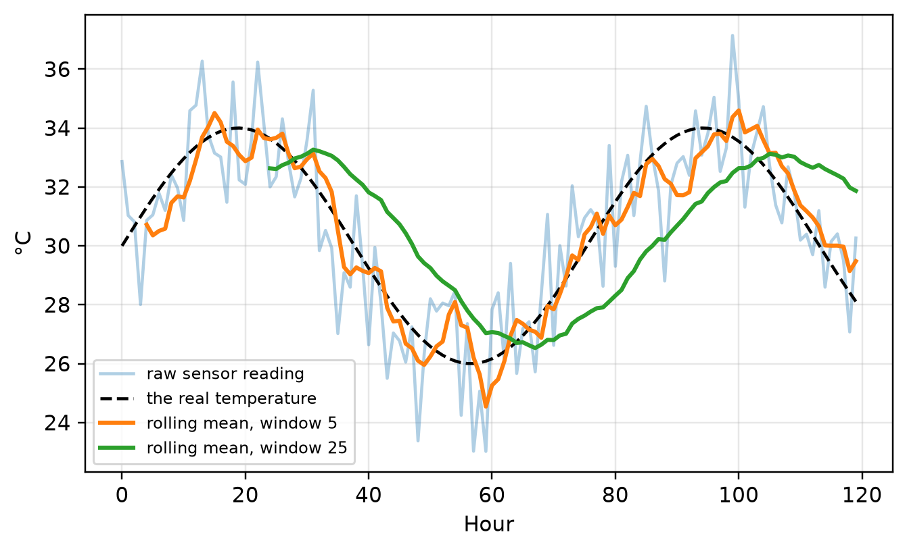
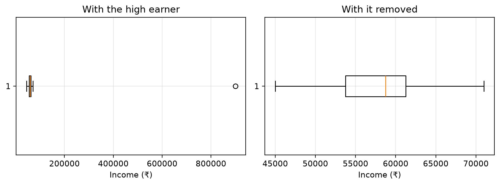

flowchart LR
A["1 Duplicates"] --> B["2 Impossible<br/>values"] --> C["3 Missing<br/>values"]
C --> D["4 Noise"] --> E["5 Outliers"] --> F["6 Text and<br/>types"]
5 Session 3 — Data Cleaning
Duplicates · Impossible values · Missing values · Noise · Outliers · Inconsistent text
Note
This chapter turns the messy table from Session 2 into a table you can compute with.
Assumed knowledge: Session 2 — loading a DataFrame, .info(), .describe(), filtering, groupby.
The one idea to take away: cleaning is a sequence, and the sequence matters. Deal with duplicates, then impossible values, then blanks, then extremes. Change that order and you will fix one problem by hiding another.
5.1 🎯 Learning outcomes
By the end of this chapter you can:
- Find and remove duplicate rows, and choose which copy to keep.
- Tell an impossible value from an extreme one, and handle each correctly.
- Fill missing values four different ways and justify which you chose.
- Explain what noise is and smooth it without erasing the signal.
- Detect outliers with the IQR rule and the z-score rule.
- Repair inconsistent text and wrong data types.
- Produce a cleaning report saying what you found and what you did about it.
5.2 How this chapter is organised
| Part | Question it answers |
|---|---|
| A — The order of operations | Which problem do I fix first, and why does it matter? |
| B — The six cleaning jobs | How do I actually fix each one? |
| C — The full pass | What does it look like done properly, end to end? |
Part A is short and is the most important part of the chapter.
6 Part A — The order of operations
6.1 1. Why order matters
Data cleaning is six jobs done in a fixed order.
Here is why the order is not a matter of taste.
Suppose one customer’s age was typed as 225. That is impossible — nobody is 225.
- Do it in the right order. Step 2 turns
225into “missing”. Step 3 then replaces it with a sensible age, say 34. The mistake is gone. - Do steps 2 and 3 the other way round. Step 3 looks for blanks, finds none —
225is a number, not a blank — and does nothing.225survives into your model and drags every average upward.
Important🔓 Impossible is not the same as extreme
Impossible = it cannot be true. An age of 225. A negative price. A blood pressure of 0. → It is an error. Turn it into missing, then impute it.
Extreme = unusual but real. A customer who spent ₹4,00,000. A 61-year-old marathon runner. → It is data. Think hard before touching it.
The dataset cannot tell you which is which. Only knowledge of the subject can.
6.1.1 Demo 1 — the same data, cleaned in two different orders
import pandas as pd
import numpy as np
ages = pd.read_csv("datasets/messy_customers.csv")["age"].head(8)
print("Raw ages from the file:", ages.tolist())
# --- WRONG ORDER: fill the blanks first, then look for impossible values ---
wrong = ages.fillna(ages.mean()) # the mean is already poisoned by 225
wrong = wrong.where(wrong <= 120, np.nan) # now remove the impossible one
print(f"\nWrong order → mean used for filling was {ages.mean():.1f} (inflated by the 225)")
print(" result:", [round(v,1) if pd.notna(v) else None for v in wrong])
# --- RIGHT ORDER: remove impossible values first, then fill the blanks ---
right = ages.where(ages <= 120, np.nan) # 225 becomes missing
right = right.fillna(right.mean()) # now the mean is honest
print(f"\nRight order → mean used for filling was {ages.where(ages<=120).mean():.1f}")
print(" result:", [round(v,1) for v in right])Raw ages from the file: [25.0, 31.0, 28.0, nan, 22.0, 225.0, 29.0, 33.0]
Wrong order → mean used for filling was 56.1 (inflated by the 225)
result: [25.0, 31.0, 28.0, 56.1, 22.0, None, 29.0, 33.0]
Right order → mean used for filling was 28.0
result: [25.0, 31.0, 28.0, 28.0, 22.0, 28.0, 29.0, 33.0]In the wrong order the blank was filled using a mean of 56.1, a value no customer is anywhere near, because the impossible 225 was still inside the average. In the right order the mean was 28.0. Same file, same functions, different order — and one answer is nonsense.
7 Part B — The six cleaning jobs
Everything below runs on one deliberately awful file — datasets/messy_customers.csv, the same one you inspected in Session 2 — so you can watch each fix land.
import pandas as pd
import numpy as np
raw = pd.read_csv("datasets/messy_customers.csv")
print(raw)
print(f"\nStarting point: {len(raw)} rows, {raw.isna().sum().sum()} blank cells") customer_id name age city income joined subscribed
0 1 Asha 25.0 Mumbai 50000.0 2024-01-05 Yes
1 2 Brij 31.0 mumbai 62000.0 05/02/2024 Y
2 3 Chan 28.0 Delhi NaN 2024-03-11 No
3 4 Devi NaN Bombay 58000.0 2024-04-02 N
4 5 Esha 22.0 Delhi 45000.0 2024-05-19 Yes
5 6 Faiz 225.0 MUM 71000.0 2024-06-30 yes
6 7 Gita 29.0 delhi 900000.0 2024-07-08 No
7 8 Hari 33.0 Pune 55000.0 2024-08-15 Y
8 3 Chan 28.0 Delhi NaN 2024-03-11 No
9 9 Isha -4.0 Pune 61000.0 2024-09-01 Yes
Starting point: 10 rows, 3 blank cells7.1 2. Duplicates
A duplicate is the same real-world thing recorded twice. They arrive when somebody double-clicks Submit, when two systems are merged, or when an export is run twice.
They matter because every duplicate silently increases that row’s influence. One customer counted twice votes twice.
7.1.1 Demo 2 — finding and removing duplicates
print("Rows that are exact copies of an earlier row:")
print(raw[raw.duplicated()])
print(f"\nDuplicated customer_ids: {raw['customer_id'].duplicated().sum()}")
deduped = raw.drop_duplicates()
print(f"\nBefore: {len(raw)} rows After: {len(deduped)} rows")Rows that are exact copies of an earlier row:
customer_id name age city income joined subscribed
8 3 Chan 28.0 Delhi NaN 2024-03-11 No
Duplicated customer_ids: 1
Before: 10 rows After: 9 rowsdrop_duplicates() keeps the first copy by default. When rows differ slightly — the same customer with an updated address — you usually want the latest instead:
# Keep the last recorded version of each customer, not the first:
latest = raw.drop_duplicates(subset="customer_id", keep="last")
print(f"One row per customer, keeping the most recent: {len(latest)} rows")One row per customer, keeping the most recent: 9 rows
Warning⚠️
duplicated() only catches exact copies
"Chan" and "chan " are different strings, so a row containing one is not a duplicate of a row containing the other. Clean your text first (job 6), then check duplicates again — the second pass usually finds more.
7.2 3. Impossible values
An impossible value violates a rule you know about the world. Finding them needs no statistics — only a list of rules.
| Column | The rule | Impossible |
|---|---|---|
| age | between 0 and 120 | 225, −4 |
| price | at least 0 | −50 |
| percentage | 0 to 100 | 130 |
| date joined | not in the future | 2031 |
7.2.1 Demo 3 — apply the rules, and convert violations to missing
df = deduped.copy()
impossible = (df["age"] < 0) | (df["age"] > 120)
print(f"Impossible ages found: {impossible.sum()}")
print(df.loc[impossible, ["customer_id", "name", "age"]])
df.loc[impossible, "age"] = np.nan # not deleted — marked as unknown
print(f"\nAges now missing (was {deduped['age'].isna().sum()}, now {df['age'].isna().sum()})")Impossible ages found: 2
customer_id name age
5 6 Faiz 225.0
9 9 Isha -4.0
Ages now missing (was 1, now 3)Notice we did not delete the rows. The customer is real; only their age is unknown. Deleting the row would throw away their income and city too. Job 4 fills the gap.
7.3 4. Missing values
A missing value is a cell where nothing was recorded. Pandas shows it as NaN. Most algorithms refuse to run with any NaN present, so every one has to go — either by removing the row or by putting an estimate in.
Putting an estimate in is called imputation.
Tip🧠 Analogy — the missing jigsaw piece
A jigsaw with one piece missing. You can throw the puzzle away (drop the row), or you can look at the surrounding pieces and cut a replacement (impute).
Where it breaks down: a cut piece is visibly a substitute. An imputed number looks exactly like a measured one. Later readers cannot tell them apart — which is why we add a column recording that we guessed.
7.3.1 First, why is it missing?
| Type | Means | Example | Safe to impute? |
|---|---|---|---|
| Missing at random | the gap has no pattern | a sensor glitched | usually yes |
| Missing for a reason | the gap depends on something else | older people skip the income question | be careful |
| Missing because of the value | the gap depends on the answer itself | the highest earners refuse to say | imputing hides the pattern |
7.3.2 Demo 4 — four ways to fill a gap
income = df["income"]
print(f"Missing incomes: {income.isna().sum()} of {len(income)}\n")
print(f"1. Mean → fill with {income.mean():>10,.0f} (pulled up by the 900,000 earner)")
print(f"2. Median → fill with {income.median():>10,.0f} (the middle value, ignores extremes)")
print(f"3. Mode → fill with {income.mode()[0]:>10,.0f} (the most common value)")
print( "4. Group → fill with the median for that person's own city\n")
by_city = df.groupby("city")["income"].transform("median")
print("Filled by city median:")
print(pd.DataFrame({
"city": df["city"],
"income_raw": df["income"],
"filled_by_city": df["income"].fillna(by_city),
}))Missing incomes: 1 of 9
1. Mean → fill with 162,750 (pulled up by the 900,000 earner)
2. Median → fill with 59,500 (the middle value, ignores extremes)
3. Mode → fill with 45,000 (the most common value)
4. Group → fill with the median for that person's own city
Filled by city median:
city income_raw filled_by_city
0 Mumbai 50000.0 50000.0
1 mumbai 62000.0 62000.0
2 Delhi NaN 45000.0
3 Bombay 58000.0 58000.0
4 Delhi 45000.0 45000.0
5 MUM 71000.0 71000.0
6 delhi 900000.0 900000.0
7 Pune 55000.0 55000.0
9 Pune 61000.0 61000.0Which to choose:
| Situation | Use |
|---|---|
| numbers, roughly symmetric | mean |
| numbers, skewed or with extremes — income, prices, house sizes | median |
| text or categories | mode (the most common value) |
| groups that genuinely differ — salary by city, weight by species | group median |
| more than about 40% of the column is missing | drop the column |
7.3.3 Demo 5 — always record that you guessed
df["income_was_missing"] = df["income"].isna() # remember, before filling
df["income"] = df["income"].fillna(df["income"].median())
df["age"] = df["age"].fillna(df["age"].median())
print(df[["customer_id", "age", "income", "income_was_missing"]])
print(f"\nBlank cells remaining: {df.isna().sum().sum()}") customer_id age income income_was_missing
0 1 25.0 50000.0 False
1 2 31.0 62000.0 False
2 3 28.0 59500.0 True
3 4 28.5 58000.0 False
4 5 22.0 45000.0 False
5 6 28.5 71000.0 False
6 7 29.0 900000.0 False
7 8 33.0 55000.0 False
9 9 28.5 61000.0 False
Blank cells remaining: 0That extra True/False column costs nothing and answers the question every later reader asks: “is this number measured or invented?”
Warning⚠️ Imputation always shrinks the spread
Filling twenty gaps with the same median puts twenty identical values into the column. The average barely moves, but the data now looks more consistent than it really is, and any measure of spread is understated. That is the price, and it is worth paying — as long as you know you paid it.
7.4 5. Noisy data
Noise is small random error on top of a real pattern. A thermometer that reads 30.1°C, then 29.8°C, then 30.3°C, when the room is a steady 30°C.
Noise is not wrong data — nothing needs correcting. It is distraction: it hides the trend you are looking for. Smoothing averages nearby points to bring the trend back.
| Method | How it works | Best for |
|---|---|---|
| Rolling mean | average each point with its neighbours | time series |
| Binning | group values into bins, replace each with its bin’s average | any ordered column |
| Regression | fit a line and read values off it | when you know the shape |
7.4.1 Demo 6 — three windows on the same noisy signal
import numpy as np
import pandas as pd
import matplotlib.pyplot as plt
sensor = pd.read_csv("datasets/sensor_readings.csv")
hours = sensor["hour"].values
reading = sensor["sensor_reading"].values
truth = sensor["true_temperature"].values # we know this only because we simulated it
s = pd.Series(reading)
plt.plot(hours, reading, alpha=.35, label="raw sensor reading")
plt.plot(hours, truth, "k--", lw=1.5, label="the real temperature")
plt.plot(hours, s.rolling(5).mean(), lw=2, label="rolling mean, window 5")
plt.plot(hours, s.rolling(25).mean(), lw=2, label="rolling mean, window 25")
plt.xlabel("Hour"); plt.ylabel("°C"); plt.legend(fontsize=8)
plt.show()
for w in (5, 25):
err = (s.rolling(w).mean() - truth).abs().mean()
print(f"window {w:>2}: average distance from the real temperature = {err:.2f} °C")
print(f"no smoothing: average distance from the real temperature = {np.abs(reading-truth).mean():.2f} °C")
window 5: average distance from the real temperature = 0.77 °C
window 25: average distance from the real temperature = 2.29 °C
no smoothing: average distance from the real temperature = 1.36 °C
Warning⚠️ Over-smoothing erases the thing you were looking for
Look at the window-25 line: it is beautifully smooth and it arrives late at every peak, because it is averaging in temperatures from twelve hours ago. Smooth enough and a real spike — a fraud burst, a machine failure — vanishes entirely. The window is a choice between noise and lag, and there is no setting that avoids both.
7.5 6. Outliers
An outlier is a value far away from the rest. Unlike an impossible value it might be completely genuine.
You need two numbers from Session 7 to find them. Here they are in one paragraph.
Important🔓 Two ideas borrowed from Session 7
Quartiles. Sort the values. Q1 is the value a quarter of the way up, Q3 is three quarters of the way up. The gap between them, IQR = Q3 − Q1, is the range the middle half of your data occupies.
Standard deviation. Roughly, the average distance of a value from the mean. A z-score says how many standard deviations from the mean a particular value is.
Session 7 does both properly. Here we only need them to draw a boundary.
| Rule | Flags a value if | Use when |
|---|---|---|
| IQR rule | below Q1 − 1.5×IQR, or above Q3 + 1.5×IQR | almost always — it ignores the extremes while measuring |
| Z-score rule | more than 3 standard deviations from the mean | the data is roughly bell-shaped |
7.5.1 Demo 7 — the two rules, and why they disagree
income = df["income"]
# --- IQR rule ---
q1, q3 = income.quantile(0.25), income.quantile(0.75)
iqr = q3 - q1
low, high = q1 - 1.5*iqr, q3 + 1.5*iqr
print(f"IQR rule → Q1={q1:,.0f} Q3={q3:,.0f} IQR={iqr:,.0f}")
print(f" acceptable range: {low:,.0f} to {high:,.0f}")
print(f" flagged: {income[(income < low) | (income > high)].tolist()}")
# --- Z-score rule ---
z = (income - income.mean()) / income.std()
print(f"\nZ-score rule → flagged: {income[z.abs() > 3].tolist()}")
print(f" largest z-score present: {z.abs().max():.2f}")IQR rule → Q1=55,000 Q3=62,000 IQR=7,000
acceptable range: 44,500 to 72,500
flagged: [900000.0]
Z-score rule → flagged: []
largest z-score present: 2.67The two rules disagree, and the reason is important. The z-score rule uses the mean and the standard deviation — and the ₹9,00,000 earner has inflated both, so it makes itself look normal. The IQR rule uses quartiles, which the extreme value cannot shift. Prefer the IQR rule whenever you suspect outliers, which is exactly when you are looking for them.
7.5.2 Demo 8 — seeing them, and deciding what to do
import matplotlib.pyplot as plt
fig, ax = plt.subplots(1, 2, figsize=(9, 3.4))
ax[0].boxplot(income, orientation="horizontal"); ax[0].set_title("With the high earner")
ax[1].boxplot(income[income < high], orientation="horizontal"); ax[1].set_title("With it removed")
for a in ax: a.set_xlabel("Income (₹)")
plt.tight_layout(); plt.show()
print(f"Mean income including it : ₹{income.mean():,.0f}")
print(f"Mean income excluding it : ₹{income[income < high].mean():,.0f}")
print(f"Median (either way) : ₹{income.median():,.0f}")
Mean income including it : ₹151,278
Mean income excluding it : ₹57,688
Median (either way) : ₹59,500You have four options, and deleting is the last of them:
| Option | When |
|---|---|
| Keep it | it is genuine and it matters — fraud, a top customer, a failure |
| Cap it | it is genuine but distorting; replace with the boundary value |
| Transform | the whole column is skewed; a log transform tames it (Session 5) |
| Delete | you can show it is an error, and you say so in the report |
Warning⚠️ In fraud data, the outliers are the answer
Every fraudulent transaction is an outlier. A pipeline that removes outliers by rule deletes every case you were hired to find — and reports excellent accuracy on what is left. Never remove outliers automatically. Look at them first.
7.6 7. Inconsistent text and wrong types
The same thing written four ways is four different things to a computer. Mumbai, mumbai, MUM and Bombay become four separate categories, splitting one city’s data into four thin slices.
7.6.1 Demo 9 — repairing a text column
print("Before:")
print(df["city"].value_counts())
city = df["city"].str.strip().str.lower() # trim spaces, lower the case
city = city.replace({"mum": "mumbai", "bombay": "mumbai"}) # map known aliases
df["city"] = city.str.title()
print("\nAfter:")
print(df["city"].value_counts())Before:
city
Delhi 2
Pune 2
Mumbai 1
mumbai 1
Bombay 1
MUM 1
delhi 1
Name: count, dtype: int64
After:
city
Mumbai 4
Delhi 3
Pune 2
Name: count, dtype: int64Four spellings became two real cities. Note the order: strip and lower first, so that " MUM " and "mum" both reach the alias map.
7.6.2 Demo 10 — dates stored as text
print("The 'joined' column is stored as:", df["joined"].dtype, "— that is text, not a date")
print("Sorting text gives:", sorted(df['joined'].tolist())[:3])
df["joined"] = pd.to_datetime(df["joined"], format="mixed", dayfirst=False)
print("\nAfter conversion:", df["joined"].dtype)
print("Now we can do date arithmetic:")
print(f" earliest join date : {df['joined'].min().date()}")
print(f" latest join date : {df['joined'].max().date()}")
df["join_month"] = df["joined"].dt.month_name()
print(f" months present : {df['join_month'].unique().tolist()}")The 'joined' column is stored as: str — that is text, not a date
Sorting text gives: ['05/02/2024', '2024-01-05', '2024-03-11']
After conversion: datetime64[us]
Now we can do date arithmetic:
earliest join date : 2024-01-05
latest join date : 2024-09-01
months present : ['January', 'May', 'March', 'April', 'June', 'July', 'August', 'September']While joined was text, "05/02/2024" sorted between "2024-..." strings by character, not by date, and no arithmetic was possible at all. Converting types is part of cleaning, not a formality.
Warning⚠️
05/02/2024 is ambiguous
Is that 5 February or 2 May? Pandas has to guess unless you tell it with dayfirst=. Getting this wrong shifts dates by months and produces no error at all. Always state the format when you know it.
8 Part C — The full pass
8.1 8. Cleaning as one function, with a report
A cleaning pass should be repeatable and should report what it did. If it is a scattering of cells run in an order you no longer remember, nobody — including you next month — can reproduce the result.
8.1.1 Demo 11 — the whole sequence, with a report
import pandas as pd
import numpy as np
def clean(data):
"""Run the six cleaning jobs in order and return the result plus a report."""
report = {}
d = data.copy()
report["rows_in"] = len(d)
# 1 — duplicates
d = d.drop_duplicates()
report["duplicates_removed"] = report["rows_in"] - len(d)
# 2 — impossible values
bad_age = (d["age"] < 0) | (d["age"] > 120)
report["impossible_ages"] = int(bad_age.sum())
d.loc[bad_age, "age"] = np.nan
# 3 — missing values (median, because income is skewed)
report["blanks_filled"] = int(d[["age", "income"]].isna().sum().sum())
d["income_was_missing"] = d["income"].isna()
d["age"] = d["age"].fillna(d["age"].median())
d["income"] = d["income"].fillna(d["income"].median())
# 5 — outliers: flag, do not delete
q1, q3 = d["income"].quantile([0.25, 0.75])
hi = q3 + 1.5 * (q3 - q1)
d["income_is_outlier"] = d["income"] > hi
report["outliers_flagged"] = int(d["income_is_outlier"].sum())
# 6 — text and types
d["city"] = (d["city"].str.strip().str.lower()
.replace({"mum": "mumbai", "bombay": "mumbai"}).str.title())
d["joined"] = pd.to_datetime(d["joined"], format="mixed")
report["cities_after_merge"] = d["city"].nunique()
report["rows_out"] = len(d)
return d, report
clean_df, report = clean(raw)
print("CLEANING REPORT")
print("-" * 34)
for k, v in report.items():
print(f"{k.replace('_', ' '):<24} {v}")
print("-" * 34)
print(f"{'blank cells remaining':<24} {clean_df.isna().sum().sum()}")
print("\n", clean_df[["customer_id", "name", "age", "city", "income", "income_is_outlier"]])CLEANING REPORT
----------------------------------
rows in 10
duplicates removed 1
impossible ages 2
blanks filled 4
outliers flagged 1
cities after merge 3
rows out 9
----------------------------------
blank cells remaining 0
customer_id name age city income income_is_outlier
0 1 Asha 25.0 Mumbai 50000.0 False
1 2 Brij 31.0 Mumbai 62000.0 False
2 3 Chan 28.0 Delhi 59500.0 False
3 4 Devi 28.5 Mumbai 58000.0 False
4 5 Esha 22.0 Delhi 45000.0 False
5 6 Faiz 28.5 Mumbai 71000.0 False
6 7 Gita 29.0 Delhi 900000.0 True
7 8 Hari 33.0 Pune 55000.0 False
9 9 Isha 28.5 Pune 61000.0 FalseNotice what the report does not say. It does not say “the data is now clean”. It says exactly what was found and what was done, so a reader can disagree with a decision — which is the point.
8.1.2 ❓ Check yourself
Q1. Why is deleting every row with a missing value usually a bad idea?
- Deleting rows is slow.
- A row with one blank still contains good values in its other columns, and if blanks are not random you also bias what remains.
- Pandas does not allow it.
Q2. A column of house prices is strongly skewed by a few mansions. Which value should fill the blanks?
- The mean.
- The median.
- Zero.
Q3. Your fraud dataset has 400 transactions flagged as outliers by the IQR rule. What should you do?
- Delete them; outliers harm models.
- Look at them — in fraud data the outliers are probably the fraud.
- Replace them with the mean.
Q4. Which pair is in the correct order?
- Fill missing values, then remove impossible values.
- Remove impossible values, then fill missing values.
- It makes no difference.
NoteAnswers
A1 — (b). Dropping rows throws away every other column in that row. And if the blanks follow a pattern — say, high earners declining to answer — dropping them removes those people from your analysis entirely.
A2 — (b). The median ignores the mansions. The mean would place every filled value above what a typical house costs.
A3 — (b). Demo 8’s warning. The rule found the thing you were hired to find.
A4 — (b). Demo 1 showed exactly what the other order costs.
9 🎯 Tasks
Note✏️ Practise
Task 1 — Clean by hand first. Take the raw table at the top of Part B. On paper, without code, list every problem you can see. Then compare with the report from Demo 11. Anything you spotted that the code did not is a rule the code is missing.
Task 2 — Change the imputation. In Demo 11, change median() to mean() for income. Re-run. Report the filled value both ways and say which is more honest.
Task 3 — Add a rule. Add a check to clean() for impossible incomes (negative values). Test it by setting one income to -5000 first.
Task 4 — Pick the window. In Demo 6, try rolling windows of 3, 10 and 50. Report which gives the smallest average distance from the true temperature, and explain why the largest window is not the best.
NoteSolutions
import pandas as pd, numpy as np
# Task 2 — mean vs median for a skewed column
inc = pd.read_csv("datasets/messy_customers.csv")["income"]
print(f"Task 2 — mean fill : ₹{inc.mean():,.0f}")
print(f"Task 2 — median fill: ₹{inc.median():,.0f}")
print("The median is more honest: only one of the nine people earns anything near")
print("the mean, so filling with the mean invents a person who does not exist.\n")
# Task 4 — which smoothing window is closest to the truth
sensor = pd.read_csv("datasets/sensor_readings.csv")
truth = sensor["true_temperature"].values
reading = sensor["sensor_reading"]
for w in (3, 5, 10, 25, 50):
print(f"Task 4 — window {w:>2}: average error {(reading.rolling(w).mean()-truth).abs().mean():.2f} °C")
print("The largest window is worst: it averages over half a cycle, so it flattens")
print("the real peaks it was supposed to reveal.")Task 2 — mean fill : ₹162,750
Task 2 — median fill: ₹59,500
The median is more honest: only one of the nine people earns anything near
the mean, so filling with the mean invents a person who does not exist.
Task 4 — window 3: average error 0.78 °C
Task 4 — window 5: average error 0.77 °C
Task 4 — window 10: average error 1.14 °C
Task 4 — window 25: average error 2.29 °C
Task 4 — window 50: average error 3.21 °C
The largest window is worst: it averages over half a cycle, so it flattens
the real peaks it was supposed to reveal.
Tip✅ Before you move on